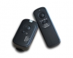
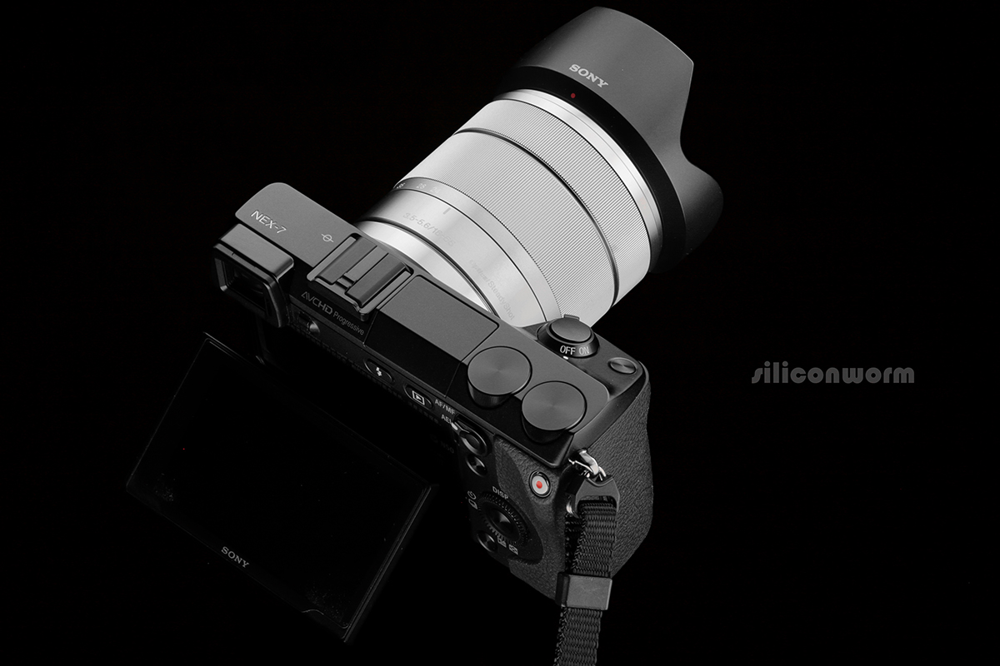

RW-221是一款高性能的无线快门遥控器。它能远距离遥控相机拍摄，具备单张拍摄、1秒连续拍摄、连续拍摄、B门拍摄、4秒延时拍摄，并且能控制多个接收器和相机同时拍摄。采用FSK制式提高了产品的可靠性和稳定性，使用2.4GHz全球免费频段。
使用方便，但是设计不合理，除了档位开关太劣质外，电池盖极容易脱落，掉了几次不得不在外面上个套。用在D800上有几次居然莫名其妙连续自拍，无法解除，只能关闭电源。
使用方便
但是设计不合理，除了档位开关太劣质外，电池盖极容易脱落，掉了几次不得不在外面上个套。用在D800上有几次居然莫名其妙连续自拍，无法解除，只能关闭电源。
一般般吧。
性价比还可以。
用在D7100上不知为何只有设定成B门才可以高速连拍。按钮部分设计的比较二，也就是🔘突出的太多，极容易误触，无奈只得自己做了一个毡垫粘在上面。
4
便宜，现在只要70
使用中
2010年先后买过三个，分别是佳能3针、尼康10针和松下2.5mm的，有一个接收器已经坏了
遥控距离远，没有失败的情况 接收器和遥控器都用的是2节七号电池，比那些要装奇怪锂电的遥控器适用性强 连接线品种多可互换 操控B门曝光比品色自己的有线定时遥控器更方便
开关设计不合理，装在摄影包里受到挤压就会自己开启 B门曝光的时候接收器上的红灯一直亮着，在全黑室内拍静物时造成干扰 遥控器上的档位开关太劣质，有一个已经没有阻尼了，都不知道什么时候在什么档上 我买的时候这个遥控器刚出来，一套180，连接线居然一根要60元，简直是抢钱
